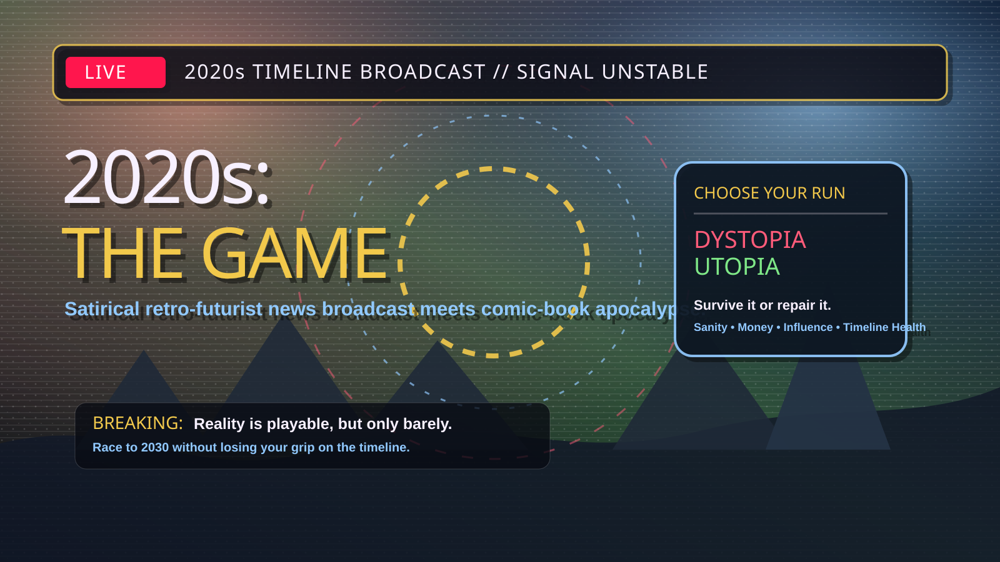

First Hero Artwork
The first real vector artwork is now in the project: a 16:9 broadcast/comic hero panel for the prototype.

New in v0.14: Art Direction & Atmosphere Pass
The prototype now has a consistent visual language: retro-futurist broadcast frames, comic-apocalypse halftone texture, lower-thirds, character portrait slots, event art slots, and Dystopia / Utopia atmosphere.
Satire Disclaimer
This game is a work of political and cultural satire. It is not intended as factual reporting, political instruction, or endorsement of any real-world theory, person, party, or organization.
Prototype Features
- Video game mode with Dystopia Run and Utopia Run.
- First real vector hero artwork.
- Retro-futurist broadcast/comic art system and placeholder art slots.
- Choice-based year events, character identity, and Timeline Health.
- Board game mode with 110 prototype cards.
- Daily Chaos, Chaos Engine, movement trails, final reports, and shareable survival certificate.
Print-and-Play Kit
Use these pages to run a table playtest.
Characters
40-Space Prototype Board
Prototype Cards
The board game decks total 110 cards, including table-action prompts, audience votes, conspiracy corkboard moments, and stronger Final Reckoning cards.
Version Roadmap
- v0.13: video game feel pass with character identity, event categories, outcome feedback, and mode-specific visual styling.
- v0.14: art direction and atmosphere pass with broadcast/comic placeholder art slots, first hero artwork, and an art direction page.
- v1.0: public preview build.